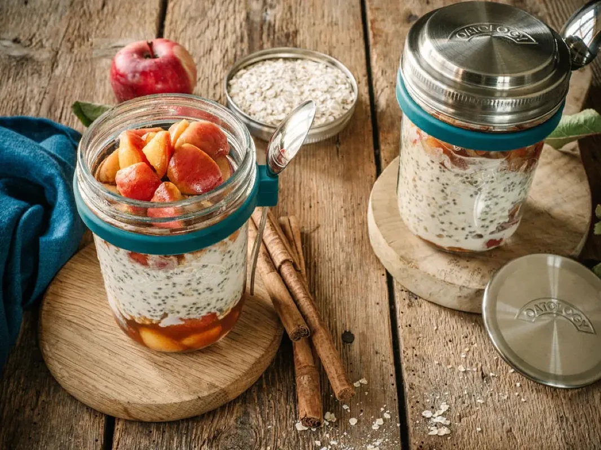
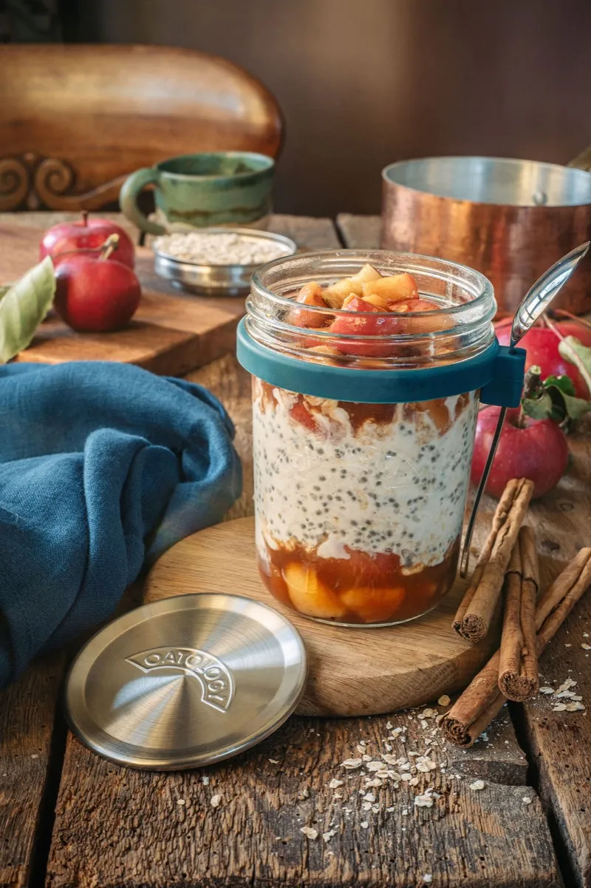
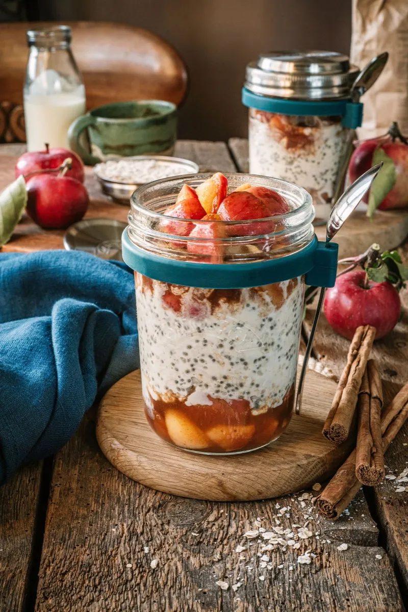
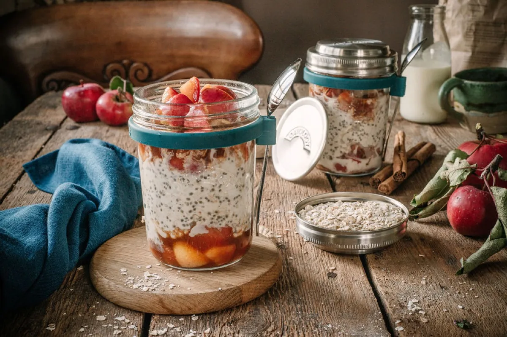

Apple Pie Overnight Oats
Apple pie overnight oats take about 15 minutes to make: stew ½ a sliced red apple with cinnamon, honey, and a pinch of salt, then stir 50g rolled oats, 150ml milk, 1 tbsp chia seeds, and 1 tbsp Greek yoghurt in a jar and layer the apple through the middle. Refrigerate overnight and by morning it tastes like pudding for breakfast. Made with semi-skimmed milk, one jar comes to roughly 420 calories, with about 14g of protein and 10g of fibre.
Warm spice, stewed apple, and a cosy finish that tastes like apple crumble. This is the one recipe on the site with a 5-minute cooking step, and the only one worth lighting the hob for.

The recipe
Ingredients
For the stewed apples
- ½ medium red apple, sliced
- ½ tbsp honey or maple syrup
- 1 tbsp water
- ½ tsp ground cinnamon
- A pinch of salt
For the oats
- 50g / generous ½ cup rolled oats (one lid)
- 150ml / scant ⅔ cup milk of choice (to the milk line)
- 1 tbsp chia seeds
- 1 tbsp Greek yoghurt
- A pinch each of ground ginger, cardamom, and salt (optional)
Method
- Heat a small sauté pan over medium-low heat. Add the sliced apples, honey or maple syrup, cinnamon, and a pinch of salt.
- Cook for about 5 minutes, stirring occasionally, until the apples soften. Remove from the heat and let cool slightly.
- In your jar, add the rolled oats, chia seeds, and spices (if using). Stir well to combine, then pour in the milk and Greek yoghurt.
- Place half of the stewed apples into the bottom of the jar, then add the oat mixture as the middle layer.
- Top with the remaining stewed apples.
- Cover and refrigerate overnight.
- Top with extra stewed apples before serving, if desired.
Tips and variations
- More protein: stir in an extra spoonful of Greek yoghurt, or a small scoop of vanilla protein powder with a splash more milk.
- Make it vegan: use a plant yoghurt and swap the honey for maple syrup. The stewed apple and spices carry the flavour either way.
- For crunch: a scatter of toasted pecans or a spoon of granola over the top turns it properly crumble-like.
The jar we make it in
Every recipe on this site is written around the OATOLOGY jar: the lid measures the oats, the milk line measures the milk, and the sealed lid means it travels without leaking. No scales, no guesswork. Your own jar works too, anything sealable with room for a good stir.
Get the OATOLOGY jar on Amazon 2-pack, amazon.co.uk Weighing up options? Our honest guide to overnight oats jarsYour questions, answered
Do you have to stew the apples, or can you use raw grated apple?
Apple pie overnight oats work best with stewed apples, but raw grated apple is fine if you are short on time: expect a softer, fresher result with less caramelised, jammy depth. Raw apple also browns, so grate it just before serving or toss it with a little lemon juice. The 5-minute stew is worth it.
Can you make apple pie overnight oats the night before?
Yes, making apple pie overnight oats the night before is the whole point: stew the apples, layer everything in the jar, and refrigerate for at least 8 hours. They keep up to 3 days in a sealed jar in the fridge, kept at 5°C or below (the Food Standards Agency's recommended fridge temperature).
Do you eat apple pie overnight oats warm or cold?
Apple pie overnight oats are made to eat cold, straight from the fridge, but this is the one recipe that also shines warm: microwave for 60 to 90 seconds and it tastes like apple crumble. Loosen with a splash of milk. Keep any metal lid well away from the microwave.
Which apples work best for apple pie overnight oats?
Apple pie overnight oats are best with a firm eating apple like Braeburn or Gala, which hold their shape through the 5-minute stew and bring natural sweetness. Bramley cooking apples collapse into a sharp purée and need more honey. Half a medium apple is enough for one jar.
Can you make apple pie overnight oats dairy-free?
Yes, apple pie overnight oats are easy to make dairy-free: swap the 150ml milk for any plant milk and the Greek yoghurt for a plant yoghurt like coconut or soya. As written they are not vegan, because of the honey, so use maple syrup instead of honey to make them fully plant-based.
A closer look


